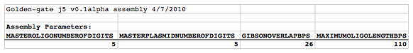
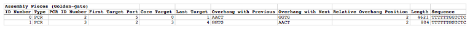

- Introduction
- 1. Intro. to BioCAD/CAM
- 2. Intro. to DNA Assembly
- 3. Synthetic Evolution
- 4. BioCAD demos
- 5. Managing DNA sequences
- 6. Managing columns
- 7. Managing specific parts
- 8. Design files
- 9. DNA assembly protocol generator
-
10.
Specific examples of using j5
- 10.1. SLIC, Gibson, CPEC assembly (and GeneArt® Seamless Cloning)
- 10.2. Combinatorial SLIC, Gibson, CPEC assembly
- 10.3. Mock assembly
- 10.4. Combinatorial Mock assembly
- 10.5. Golden Gate assembly
- 10.6. Combinatorial Golden Gate assembly
- 10.7. Condensation of multiple j5 assembly files
- 10.8. Distribution of PCR reactions
- 10.9. Conversion of SBOL XML <-> GenBank sequence files
- 11. File formats used by j5
-
12.
j5 input files
- 12.1. j5 parameters file
- 12.2. Sequences list file and zipped sequences file
- 12.3. Parts list file
- 12.4. Target part order list file
- 12.5. Eugene rules list file
- 12.6. Master plasmids list file
- 12.7. Master oligos list file
- 12.8. Master direct syntheses list file
- 12.9. Assembly files to condense list file and zipped assembly files file
- 12.10. Downstream automation parameters file
- 12.11. Multi-well plate file
- 12.12. Source plate list file and zipped source plate files file
-
13.
j5 output assembly files
- 13.1. SLIC/Gibson/CPEC/SLiCE assembly output file
- 13.2. Combinatorial SLIC/Gibson/CPEC/SLiCE assembly output file
- 13.3. Mock Assembly output file
- 13.4. Combinatorial Mock Assembly output file
- 13.5. Golden Gate assembly output file
- 13.6. Combinatorial Golden Gate assembly output file
- 13.7. Condensed multiple j5 assembly files
- 14. j5 downstream automation
- 15. j5 error messages
- 16. Experimental protocols
- 17. Related publications
- Published with GitBook
Golden Gate assembly output file
The Golden Gate assembly j5 output file is a CSV file that contains all of the information resulting from the Golden Gate assembly design process. The first line in the file is a header line that just serves to identify the assembly method selected (e.g. "Golden Gate"), as well as the version of j5 used to generate the assembly (e.g. "v0.1alpha") and the date that the assembly was designed (e.g. "4/7/2010").
Assembly Parameters subsection:
displays the j5 parameters selected for the assembly design process, which were dictated by the j5 parameters file.
Here is an example first line header and Assembly Parameters subsection (truncated after the fourth column, stylized for clarity):

Assembly Pieces (Golden Gate) subsection:
displays the assembly pieces that will be required for the assembly.
ID Number column fields: The assembly pieces are enumerated starting with "0".
Type column fields: The type of reaction from which the assembly piece was derived. This could be either "PCR", "SOE", "Annealed Oligos" or "Direct Synthesis".
Type ID Number column fields: The assembly pieces are enumerated starting with "0" separately for each of the following three types: 1) PCR/SOE, 2) Annealed Oligos, 3) Direct Synthesis/PCR.
First Target Part column fields: The first target part in the Target Part Ordering/Selection/Strategy subsection above, that is embedded within the assembly piece.
Core Target Part column fields: The target part that is either at the core of a PCR/SOE reaction derived assembly piece (i.e. not the flanking parts that were embedded in the oligo primers), or the last target part embedded within a direct synthesis derived assembly piece.
Last Target Part column fields: The last target part in the Target Part Ordering/Selection/Strategy subsection above, that is embedded within the assembly piece.
Overhang with Previous column fields: The Golden Gate overhang sequence shared with the previous assembly piece. For linear DNA products, this field will be blank for the first assembly piece.
Overhang with Next column fields: The Golden Gate overhang sequence shared with the next assembly piece. For linear DNA products, this field will be blank for the last assembly piece.
Relative Overhang Position column fields: The relative overhang position between this assembly piece, and the next. See the target part order list file documentation for more information. For linear DNA products, this field will be blank for the last assembly piece.
Length column fields: The length of the assembly piece in bps.
Sequence column fields: The sequence of the assembly piece.
Here is an example Assembly Pieces (SLIC/Gibson/CPEC/SLiCE) subsection (stylized for clarity; the oligo names are truncated as displayed):

Other subsections:
are identical to those described for the j5 SLIC/Gibson/CPEC/SLiCE assembly design output file.
Depending on the particular assembly, a number of warning messages may follow the Assembly Pieces (Golden Gate) subsection. These concern the presence of type IIs endonuclease sites or highly homologous sequence repeats within the final assembled vector. A warning message may notify you that the recognition sequence for the Golden Gate type IIs endonuclease is present one or more times in the final assembled vector, and where these site(s) are located. The recognition site sequence is defined in the j5 parameters file. Depending on the overhangs generated by cleaving at these sites, the sites may reduce the efficiency of the assembly, or disrupt it all together.
Here is an example type IIs endonuclease site warning message that may follow the Assembly Pieces (Golden Gate) subsection (click here to see enlarged version):
{kind=link}
Warning messages are also issued if homologous sequences repeats are encountered in the final assembled vector. The criteria (minimum homologous sequence length, and maximum fraction of mismatches) for determining significant homologous sequence repeats are configurable within the set of j5 parameters.
Here is an example homologous sequence repeat warning message that may follow the Assembly Pieces (Golden Gate) subsection (click here to see enlarged version):
{kind=link}

Example j5 output Golden Gate assembly file:
Here is an example j5 Golden Gate assembly output CSV file: pj5_00002.csv